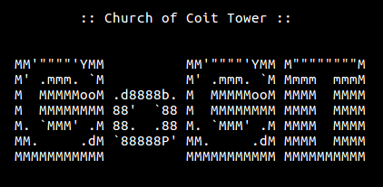

:: CoCT :: Streams ::
:: Live DJs ::
:: Moon Radio ::
:: CoCT :: External media players ::
Click the image below to download a .pls playlist file compatible with Vlc and other players.
:: Live DJs ::
:: Moon Radio ::
:: CoCT :: Manual configuration ::